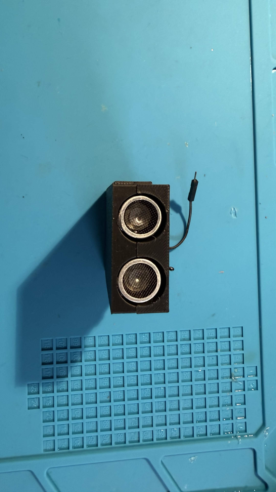
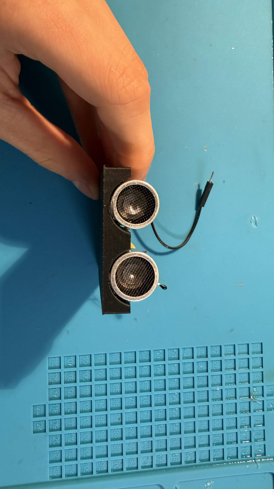
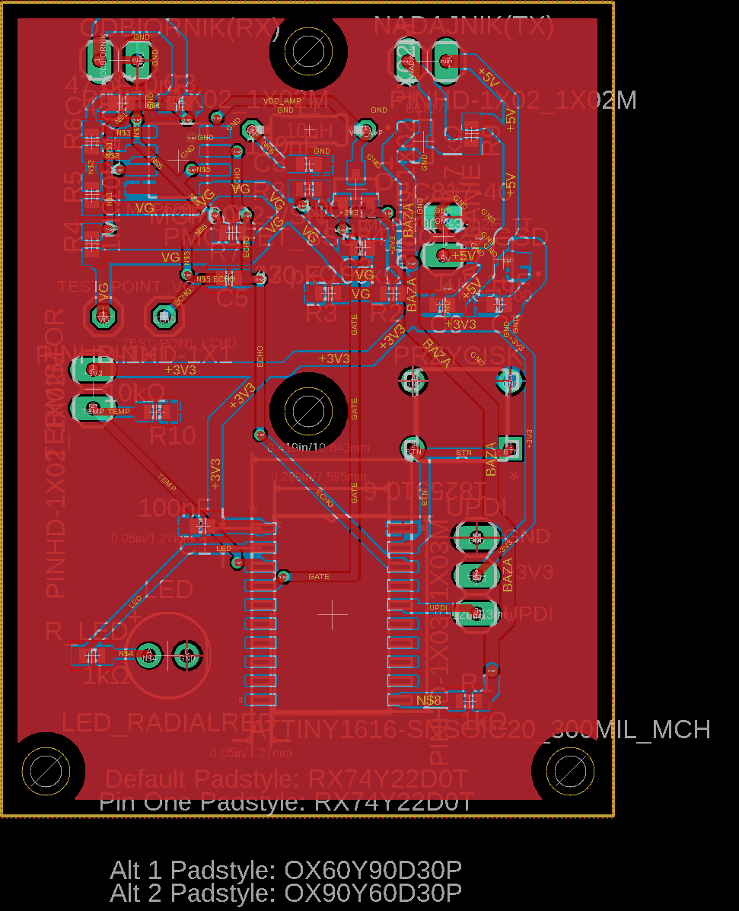
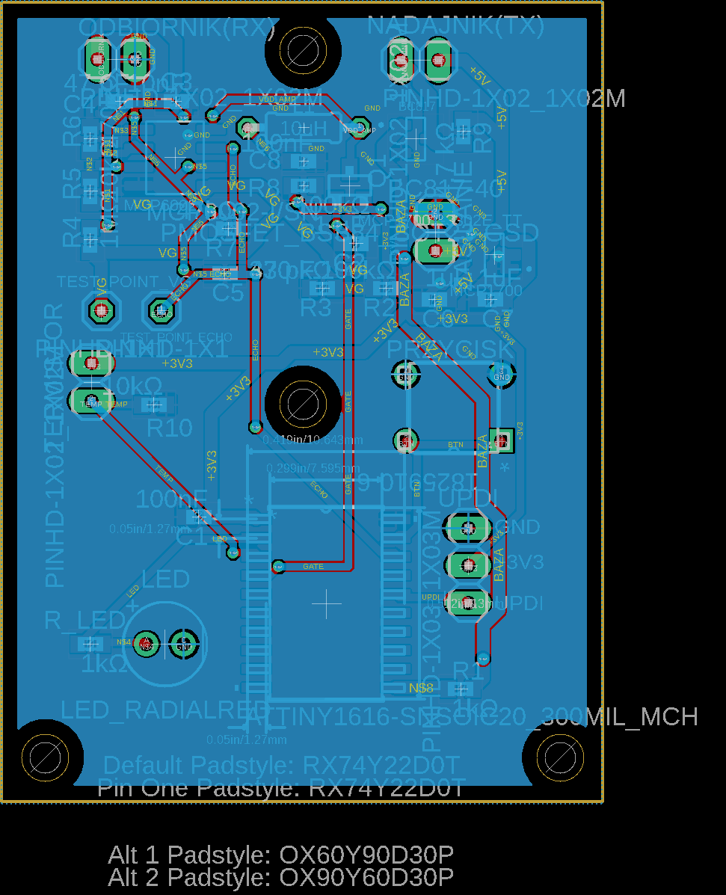
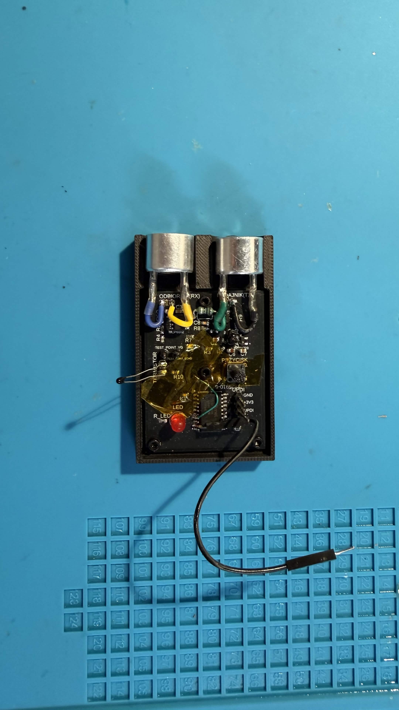
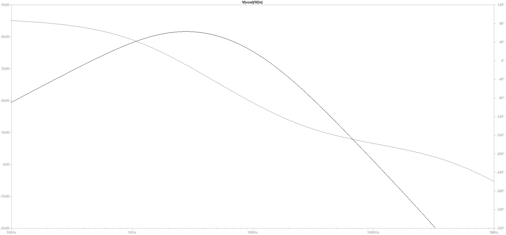
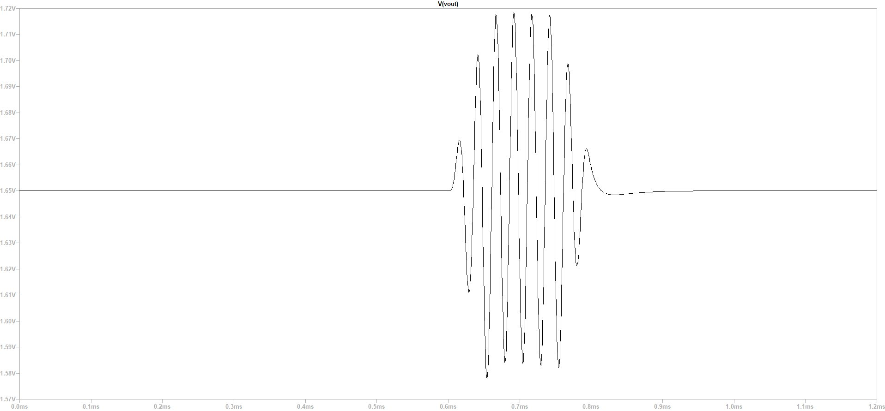
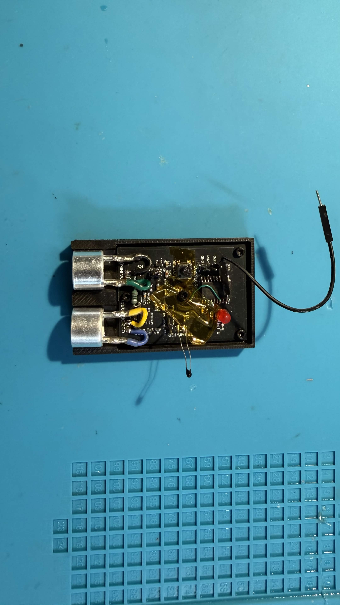
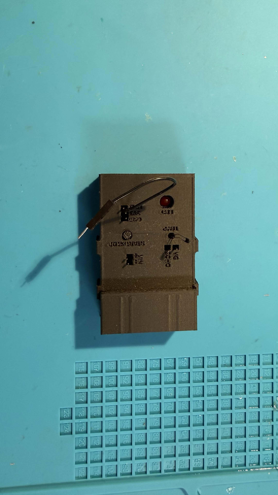

Wygraj Indeks WETI 2026 · PG
Bezkontaktowy
miernik odległości
Ultradźwiękowy pomiar czasu przelotu (40 kHz) z docinaniem fazą i kompensacją temperatury — na jednym ATtiny1616.
PROTOTYP

Zmontowane urządzenie w obudowie01 Cel projektu
Co miało powstać
- Zasilanie 5 V, zakres pomiaru 10–50 cm
- Wykrywany obiekt: karton 20×20 cm
- Oceniane: błąd RMSE, pobór mocy, koszt, jakość
- Konkurs „Wygraj Indeks WETI 2026", Politechnika Gdańska
PRZETWORNIKI US 40 kHz

Para przetworników: nadajnik + odbiornik02 Wybór metody
Dlaczego Pulse-Phase Ranging
| Metoda | RMSE | Koszt | Uwaga |
|---|---|---|---|
| Prosty ToF (US) | ~3 mm | niski | ograniczony obwiednią |
| Pulse-Phase (US) ★ | ~0,5 mm | niski | ToF + faza — wybrany kompromis |
| FMCW chirp | <0,5 mm | średni | za duże zasoby na ATtiny |
| Triangulacja optyczna | ~1 mm | średni | wrażliwa na światło |
Wybór: tanie przetworniki rezonansowe, dokładność sub-mm w zasięgu ATtiny1616, odporność na kolor i oświetlenie obiektu.
03 Zasada fizyczna
Echo, czas, odległość
D = c · t / 2
droga tam i z powrotem → dzielimy przez 2
droga tam i z powrotem → dzielimy przez 2
c(T) = 331,3 + 0,606 · T
prędkość dźwięku zależy od temperatury → NTC
prędkość dźwięku zależy od temperatury → NTC
- Burst 40 kHz wychodzi z nadajnika, odbija się od obiektu i wraca
- Mierzymy czas t licznikiem TCB0 (takt 100 ns)
- Termistor NTC koryguje prędkość dźwięku (~0,17%/°C)
04 Architektura
Tor sygnałowy
🔋
Zasilanie
5V → 3,3V MCP1700
▶
📡
Nadajnik
BC817 · 40 kHz
)))
🎯
Obiekt
karton 20×20
(((
🔊
Odbiornik
MCP6002 RX
▶
🧠
ATtiny1616
ToF + faza
Mikrokontroler steruje burstem, próbkuje echo, liczy czas i fazę,
koryguje temperaturę i wysyła wynik przez USART.
05 Sprzęt · schemat
Schemat ideowy
EAGLE · SCHEMAT
 Zasilanie · nadajnik (BC817) · tor RX (MCP6002 + bramkowanie Q1/BSS84) · ATtiny1616
Zasilanie · nadajnik (BC817) · tor RX (MCP6002 + bramkowanie Q1/BSS84) · ATtiny1616
Zasilanie · nadajnik (BC817) · tor RX (MCP6002 + bramkowanie Q1/BSS84) · ATtiny1616
06 PCB i prototyp
Płytka dwuwarstwowa 41 × 54,25 mm
TOP

Warstwa sygnałowaBOTTOM

Ground planePROTOTYP

Zmontowana płytka07 Tor analogowy RX
Wzmacniacz MCP6002
- Dwa stopnie: wzmocnienie ~10×
- Filtr pasmowy skupiony na 40 kHz
- Odcina szum i echa poza pasmem
- Zasilanie bramkowane P-MOSFET-em (oszczędność energii)
LTSPICE · BODE

Maksimum wzmocnienia wokół 40 kHz08 Pomiar · czas przelotu
Detekcja echa — onset
- Onset = 40% szczytu obwiedni → niezależny od amplitudy
- Interpolacja sub-próbkowa przejścia progu
- Czas mierzony TCB0 (100 ns/takt)
- Seria 9 strzałów → mediana + odrzucanie outlierów (MAD)
To ścięło błąd losowy z ~4 mm do ~1,5 mm.
SYMULACJA · ECHO Vout

Obwiednia echa — onset wyznacza czas przelotu09 Pomiar · faza
Filtr Goertzela — docinanie fazą
// Goertzel @ 40 kHz na buforze echa -> faza nosnej
float cw=cosf(w), coeff=2*cw, s1=0, s2=0;
for (k=0; k<W; k++) {
float x = echo[k] - baseline;
float s0 = x + coeff*s1 - s2;
s2 = s1; s1 = s0;
}
phase = atan2f(s2*sinf(w), s1 - s2*cw);
83°/mm
FAZA ZMIENIA SIĘ LINIOWO Z ODLEGŁOŚCIĄ
- Liczę jeden prążek DFT (taniej niż całe FFT — znam częstotliwość)
- Faza docina wynik do siatki λ/2 ≈ 4,3 mm; numer prążka z ToF
- Uśredniana po pingach + miara spójności PLV
10 Zarządzanie mocą
Spoczynek 0,9 mW
- Tryb Standby + budzenie z RTC co 125 ms
- Wzmacniacz odcinany P-MOSFET-em (Q1) → 0 µA w spoczynku
- ADC i peryferia włączane tylko na czas pomiaru
| Stan | Prąd @ 5V | Moc |
|---|---|---|
| Spoczynek | 0,18 mA | 0,9 mW |
| Pomiar (~70 ms) | 2–4,5 mA | 10–22 mW |
0,9 mW
→ MAKSYMALNE 50 pkt za moc
11 Wyniki pomiarowe
Zmierzony błąd RMSE ≈ 2,4 mm
ODCZYT vs RZECZYWISTA [mm]
RESIDUUM D−Dref [mm]
2,4 mm
RMSE · 35 ODCZYTÓW
R² > 0,999
R² > 0,999
Cały zakres 10–50 cm mierzony; detekcję 50 cm zapewnia adaptacyjne wydłużenie burstu (N=24).
12 Wyzwania
Czego się nauczyłem
- Bug AC0→AC1: pin PB4 to dla AC0 wejście ujemne; dodatnie (AINP3) dopiero dla AC1 → DAC1. Po korekcie ruszył sprzętowy capture.
- Słabe echo na 50 cm → adaptacyjne wydłużenie burstu (N=24).
- Uczciwie: sub-mm ogranicza jitter zgrubny < λ/4 — pokazuję zmierzone 2,4 mm, nie deklarowane 0,5 mm.
DEBUG · PROTOTYP

Uruchamianie i strojenie na stanowisku13 Podsumowanie
Wszystkie wymagania — spełnione i zmierzone
10–50 cm
Zakres
2,4 mm
Błąd RMSE
0,9 mW
Pobór mocy
43,73 zł
Koszt BOM
Dalszy rozwój
push-pull TX (+6 dB SNR)
kalibracja wielopunktowa (LUT)
pełne sub-mm z fazy
Koniec
Dziękuję.
Pytania?
URZĄDZENIE

Bezkontaktowy miernik odległości